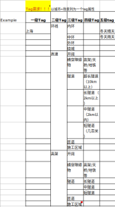

xloc data collection
background
Support LOC generalization test, merge with the test of the Prediction
plan
Persim version
persim 3.0
Model
Support NPOS220 counting cars, and plan to continue to support mass production and mining
Loc need
Data signal requirements
Signal input list: https: // inside-docupedia.bosch.com/confluence/display/wave3/Input+Signals+V1.2
List of signal input: https:// inside-docupedia.bosch.com/confluence/display/wave3/MTA+whitelist+for+Loc
Data collection scene requirements
|
Updated |
need |
illustrate |
|
30 May 2023 |
|
|
Enter signal quality requirements
Input Signals Overall Requirements - wave 3 development - Docupedia (bosch.com)
Data TAG demand
The attributes that TAG cares about, the principle is to classify the attributes in the scene classification in 3.3. One column of one attribute, one data often meets multiple attributes, and has corresponding attributes.
Level first tag: city
Second TAG: Classification of the route (high -speed, viaduct, city fast, main roads, secondary roads, branch roads, etc.)
Three TAG: Regional classification (internal and foreign ring, open, tunnel, cover, etc.)
Level 4 TAG: Special Region Classification (Long Tunnel, Bridge, etc.)
Level 5: Climate (winter during winter, rainy days in winter, etc.)
example:
